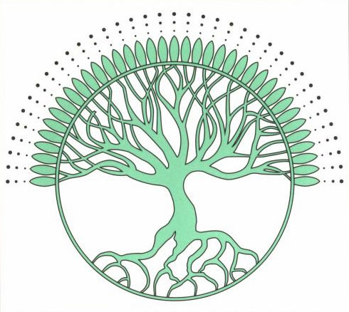

Abraham-Hicks
Quotes
A New Beginning I : Handbook for Joyous Survival
Quotes:
"The thoughts that you think, regarding those things that you want, set into
motion the creation, and eventual fulfillment, of that which you want. And
likewise, the thoughts that you think, regarding those things that you do
not want, set into motion the creation, and eventual fulfillment, of that
which you do NOT want."
"The thoughts that you set forth in combination
with great emotion are the most powerful of your thoughts."
"Understand that all thoughts create -- and the
more emotion that is present at the time that a thought is set in motion,
the faster the creation will be received -- and as frequent thought is given
in any direction, without the hindrance of negative thought, there is
certain creation, eventually."
"Your emotions are not from your physical world. They come forth from the
inner world and are directly communicated to you from your Inner Being."
"As you are feeling positive emotion - such as love, peace, happiness, joy,
excitement, exhilaration ... it is your Inner Being communicating to you in
that moment that you are feeling the emotion - that your thoughts are in
harmony with that which you are wanting, As you are experiencing negative
emotion - such as fear or doubt, anger, hatred, jealousy, stress, guilt,
anxiety .. it is a communication from your Inner Being telling you that in
that moment - that which you are focused upon is not in harmony with what
you are wanting."
"a belief is nothing more than a thought that you
have thought before, that you continue to think."
"Your thoughts are powerful creators, and your words are even more powerful
than your thoughts, but your actions are more powerful than your words or
your thoughts."

A New Beginning II : A Personal Handbook to Enhance Your Life...Quotes:
"Where you now stand is a result of thoughts and feelings that you have
offered before, but where you are going is a result of your perspective of
where you now stand."
"Do not worry. Your experience, your hard work,
your growth, is not being wasted, for your Inner Beings accumulates every
particle of every experience that you have ever lived, or that you are now
living."
"The process of Deliberate Creation is twofold: It involves the thought that
you project, and the corresponding feeling that comes forth. You offer the
thought from your conscious, physical perspective -- and your Inner Being
offers you a corresponding feeling. Therefore, you are literally
co-creating: You, the physical you, and you, the inner, Non-physical you."
"To stand in your now, looking forward with deliberate intent and
anticipation of what is to come, is infinitely more satisfying than to stand
in your now, looking back, retracing your steps as to how you got where you
are."
"You can move much more swiftly and effectively toward the joyous success you seek in life by giving your attention and emphasis to the way you want to feel, or to your state of being, rather than to the action."
Source: http://www.inner-growth.info/abraham_hicks/abraham_hicks_quotes.htm